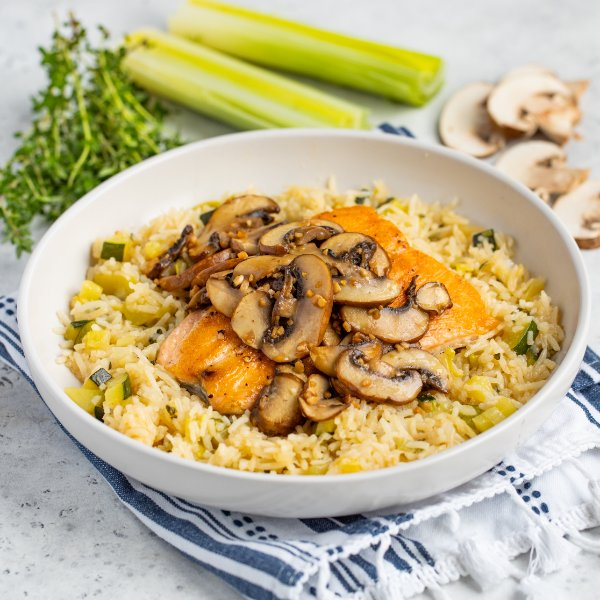

Pan Seared Salmon with Soy Tossed Mushrooms & Zucchini-Thyme Rice

Total Time
40 min
Nutrition (Per Serving)
659.8 kcalCalories
48.2 gProtein
55.3 gCarbs
27.8 gFat
Full nutrition table
| Calories | 659.8 kcal |
| Total fat | 27.8 g |
| Saturated fat | 4.8 g |
| Trans fat | 0.1 g |
| Cholesterol | 76.5 mg |
| Sodium | 143.4 mg |
| Carbohydrates | 55.3 g |
| Fiber | 4.1 g |
| Sugars | 6.4 g |
| Protein | 48.2 g |
| Potassium | 1799.1 mg |
| Calcium | 175.4 mg |
| Iron | 6.4 mg |
| Vitamin A | 426.9 IU |
| Vitamin C | 36.3 mg |
| Vitamin D | 617.5 IU |
Cookware
Ingredients
- 16 fl ozchicken or vegetable broth
- 1 lbcremini mushrooms
- 1 small pkgfresh thyme
- 2 clovesgarlic
- 1 cupjasmine rice
- 2leeks
- 1 ½ lbsalmon fillet
- 2 mediumzucchini squash
- black pepper
- extra virgin olive oil
- salt
- soy sauce
Steps
- Wash and dry the fresh produce.2 leeks
2 medium zucchini squash
1 small pkg fresh thyme
1 lb cremini mushrooms - Trim off the root ends and dark green tops of the leeks, leaving only the white and pale green parts. Cut the leeks in half lengthwise and rinse under running water, separating the layers to remove any dirt and grit. Slice crosswise into ¼-inch thick pieces and place in a medium bowl.
- Trim and small dice zucchini; add to the bowl with the leek.
- Slide thyme leaves off the stems; discard the stems. Add leaves to the bowl.
- Preheat a medium saucepan over medium heat.
- While the pan heats up, place rice in a strainer or colander and rinse under cold, running water.1 cup jasmine rice
- Once the saucepan is hot, add oil and swirl to coat the bottom; add veggies and rice. Cook, stirring constantly, until the veggies start to soften, 3-4 minutes. Stir in broth and salt, then bring to a boil over high heat.4 tsp extra virgin olive oil
16 fl oz (2 cups) chicken or vegetable broth
½ tsp salt - Once the liquid in the saucepan comes to a boil, stir the mixture, cover the saucepan, and reduce heat to low. Cook until the liquid is mostly absorbed, 15-18 minutes. Once done, remove from the heat and let it stand, still covered, for 5 minutes.
- Meanwhile, preheat a large skillet over medium-high heat.
- While the skillet heats up, pat salmon dry with paper towels and place skin-side down on a plate; season the top side with salt and pepper.1 ½ lb salmon fillet
¼ tsp salt
⅛ tsp black pepper - Once the skillet is hot, add oil and swirl to coat the bottom. Add salmon, skin-side down, and cook, flipping once, until skin is crispy and flesh is opaque, 3-4 minutes per side. Transfer to a clean plate and loosely cover with aluminum foil. (Reserve skillet for later use).4 tsp extra virgin olive oil
- Meanwhile, thinly slice mushrooms. Peel and mince garlic.2 cloves garlic
- Wipe the skillet clean with paper towels and return to medium-high heat; add more oil and swirl to coat the bottom. Add mushrooms and garlic; cook, stirring occasionally, until softened, 4-5 minutes.2 tbsp extra virgin olive oil
- Add soy sauce to the skillet and continue to cook until the liquid has evaporated, 1-2 minutes more; remove from heat.4 tsp soy sauce
- To serve, divide rice between plates or bowls; top with salmon and mushrooms. Enjoy!